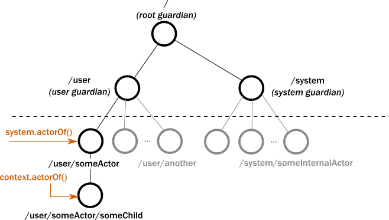

Introduction to AKKA
1 | Akka is a set of open-source libraries for designing scalable, resilient systems that span processor cores and networks. |
what happens when an actor receives a message :
- The actor adds the message to the end of a queue.
- If the actor was not scheduled for execution, it is marked as ready to execute.
- A (hidden) scheduler entity takes the actor and starts executing it.
- Actor picks the message from the front of the queue.
- Actor modifies internal state, sends messages to other actors.
- The actor is unscheduled.

Stream
Core concepts
Stream : An active process that involves moving and transforming data.
Element : An element is the processing unit of streams.
Back-pressure : A means of flow-control, a way for consumers of data to notify a producer about their current availability, effectively slowing down the upstream producer to match their consumption speeds.
Non-Blocking : Means that a certain operation does not hinder the progress of the calling thread, even if it takes a long time to finish the requested operation.
Graph : A description of a stream processing topology, defining the pathways through which elements shall flow when the stream is running.
Operator : The common name for all building blocks that build up a Graph.
Source : A operator with exactly one output, emitting data elements whenever downstream operators are ready to receive them.
Sink : A operator with exactly one input, requesting and accepting data elements possibly slowing down the upstream producer of elements
Flow : A operator which has exactly one input and output, which connects its upstream and downstream by transforming the data elements flowing through it.
RunnableGraph : A Flow that has both ends “attached” to a Source and Sink respectively, and is ready to be run().
Stream materialization is the process of taking a stream description and allocating all the necessary resources it needs in order to run.
Graphs are built from simple Flows which serve as the linear connections within the graphs as well as junctions which serve as fan-in and fan-out points for Flows.
Fan-out
- Broadcast (1 input, N outputs) given an input element emits to each output
- Balance (1 input, N outputs) given an input element emits to one of its output ports
- UnzipWith (1 input, N outputs) takes a function of 1 input that given a value for each input emits N output elements (where N <= 20)
- UnZip (1 input, 2 outputs) splits a stream of (A,B) tuples into two streams, one of type A and one of type B
Fan-in
- Merge (N inputs , 1 output) picks randomly from inputs pushing them one by one to its output
- MergePreferred if elements are available on preferred port, it picks from it, otherwise randomly from others
- MergePrioritized if elements are available on all input ports, it picks from them randomly based on their priority
- MergeLatest
- ZipWith
- Zip
- Concat
Reference :